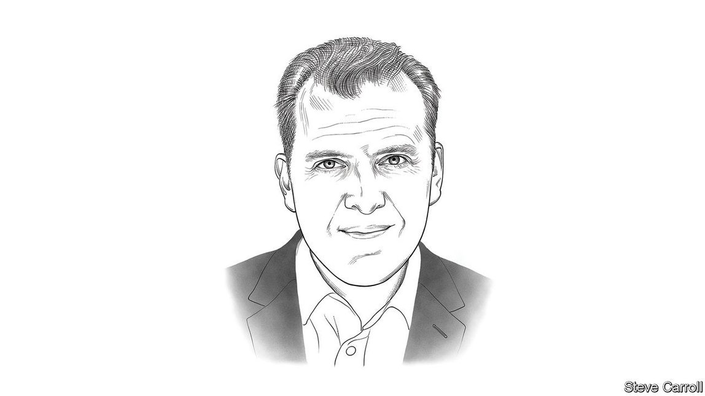

2020-12-24T20:00:17+00:00
2021年的世界
来年值得关注的十大趋势
来自《2021世界展望》主编汤姆·斯坦迪奇的一封信
你觉得自己幸运吗？数字21和运气、风险、冒险及掷骰子联系在一起。一个标准骰子共有21个点；下注和赛马使用的货币坚尼等值21先令；你必须满21岁才能进入美国赌场；在赌客中流行的包括美国的“黑杰克”（blackjack）在内的一类纸牌游戏总称“21点”。
这一切似乎不可思议地适用于异常不确定的一年。赌局的大奖是有机会控制住新冠疫情。但与此同时，在身体健康、经济活力和社会稳定方面都风险重重。随着2021年临近，新的一年有十大趋势值得关注：
鉴于疫情、经济复苏不均衡以及剑拔弩张的地缘政治之间的相互作用，未来的一年势必会是尤其不可预测的一年。我们希望本期年刊将帮助你在迎接前方的风险和机遇时提高胜算。
而前路不会是一片灰暗。经验教训和积极改变的机会也已从危机中浮现。所以，让骰子高高飞起吧——而无论2021年最终发给你什么牌，愿幸运女神永远眷顾你。
2020-12-24T20:00:17+00:00
The World in 2021
Ten trends to watch in the coming year
A letter from Tom Standage, editor of “The World in 2021”
DO YOU FEEL lucky? The number 21 is connected with luck, risk, taking chances and rolling the dice. It’s the number of spots on a standard die, and the number of shillings in a guinea, the currency of wagers and horse-racing. It’s the minimum age at which you can enter a casino in America, and the name of a family of card games, including blackjack, that are popular with gamblers.
All of which seems strangely appropriate for a year of unusual uncertainty. The great prize on offer is the chance of bringing the coronavirus pandemic under control. But in the meantime risks abound, to health, economic vitality and social stability. As 2021 approaches, here are ten trends to watch in the year ahead.
The coming year promises to be particularly unpredictable, given the interactions between the pandemic, an uneven economic recovery and fractious geopolitics. This annual will, we hope, help you improve your odds as you navigate the risks and opportunities ahead.
And it’s not all doom and gloom. Lessons and chances for positive change have emerged from the crisis. So let the dice fly high—and, whatever cards 2021 may end up dealing you, may the odds be ever in your favour.
2020-12-24T20:00:17+00:00
2021年的世界
來年值得關注的十大趨勢
來自《2021世界展望》主編湯姆·斯坦迪奇的一封信
你覺得自己幸運嗎？數字21和運氣、風險、冒險及擲骰子聯繫在一起。一個標準骰子共有21個點；下注和賽馬使用的貨幣堅尼等值21先令；你必須滿21歲才能進入美國賭場；在賭客中流行的包括美國的“黑傑克”（blackjack）在內的一類紙牌遊戲總稱“21點”。
這一切似乎不可思議地適用於異常不確定的一年。賭局的大獎是有機會控制住新冠疫情。但與此同時，在身體健康、經濟活力和社會穩定方面都風險重重。隨着2021年臨近，新的一年有十大趨勢值得關註：
鑒於疫情、經濟復蘇不均衡以及劍拔弩張的地緣政治之間的相互作用，未來的一年勢必會是尤其不可預測的一年。我們希望本期年刊將幫助你在迎接前方的風險和機遇時提高勝算。
而前路不會是一片灰暗。經驗教訓和積極改變的機會也已從危機中浮現。所以，讓骰子高高飛起吧——而無論2021年最終發給你什麼牌，願幸運女神永遠眷顧你。